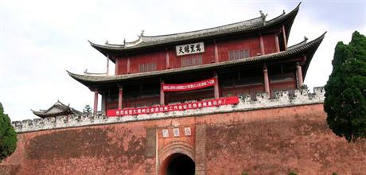
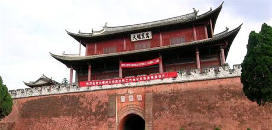

古城特色
一方山水养育了一方风土，巍山物产丰富，有一批闻名遐迩的土特名产。巍山彝族扎染具有漫长的历史和浓郁的地方色彩，在继承传统的基础上，巍山的扎染工艺在布料、成品上不断的创新。蜜饯是巍山很有特色的食品，主要源于巍宝山道人精制的蜜食品，以瓜、果、药材为原料，选用优质冬蜜制作而成；卜酱豆用优质的黑豆，经过筛选、浸泡、蒸、馏、降温、发酵、配料、养护等数道传统工序，色泽黑亮，是香醇可口的美食调料；粑肉饵丝、青豆小糕、锅巴凉粉、什锦咸菜等更是巍山远近闻名的小吃。
一方山水养育了一方风土，巍山物产丰富，有一批闻名遐迩的土特名产。巍山彝族扎染具有漫长的历史和浓郁的地方色彩，在继承传统的基础上，巍山的扎染工艺在布料、成品上不断的创新。蜜饯是巍山很有特色的食品，主要源于巍宝山道人精制的蜜食品，以瓜、果、药材为原料，选用优质冬蜜制作而成；卜酱豆用优质的黑豆，经过筛选、浸泡、蒸、馏、降温、发酵、配料、养护等数道传统工序，色泽黑亮，是香醇可口的美食调料；粑肉饵丝、青豆小糕、锅巴凉粉、什锦咸菜等更是巍山远近闻名的小吃。